О предприятии
Мы - «ÖNDIR-IS», ранее известные как «Еңбек», представляем собой республиканское государственное предприятие, которое специализируется на осуществлении производственнохозяйственной деятельности в области уголовно-исполнительной системы с привлечением к труду осужденных к лишению свободы, находящихся в исправительных учреждениях Республики Казахстан, в соответствии с Уголовноисполнительным кодексом Республики Казахстан.
Наша миссия - создание условий для социальной реабилитации, восстановления и повторной интеграции осужденных в общество.
Ибраев Аслан Кабдуллович
Генеральный директор РГП «ÖNDIR-IS»
Наша история
Предприятие было создано в соответствии с постановлением Правительства Республики Казахстан от 8 апреля 2008 года № 335. Мы начали свою деятельность под именем «Еңбек», с глубоким убеждением в возможности изменений и важности поддержки осужденных. Мы помогали им находить новые пути, обучаться профессиональным навыкам и принимать участие в общественной жизни.

Новые вызовы
Однако, с течением времени, мы столкнулись с собственными проблемами и вызовами. Было понятно, что нам нужно измениться, развиваться и идти в ногу со временем. Мы задались вопросом: «Как стать лучше и делать больше для нашей страны и для наших клиентов?»
Переосмысление и ребрендинг
Так началась наша трансформация. Мы пересмотрели свою модель работы, переосмыслили нашу миссию и ценности, и отобрали только лучших сотрудников, которые трудятся во благо нашего предприятия. И в результате этого ребрендинга, мы возродились под новым именем «ÖNDIR-IS» в марте 2024 года.
Что мы делаем?
Мы работаем на пересечении правительственных программ, образовательных и профессиональных инициатив, чтобы предоставить осужденным возможность обучения, развития навыков и поддержки на пути к новой жизни после отбывания наказания.
Для реализации поставленной задачи РГП «ÖNDIR-IS» осуществляет следующие виды деятельности:
Наше будущее
Мы смотрим в будущее с оптимизмом и решимостью. Мы стремимся быть ведущими в области социальной реабилитации и поддержки осужденных. Мы создаем пути для новых возможностей, для возвращения надежды и веры в себя для каждого нашего клиента.